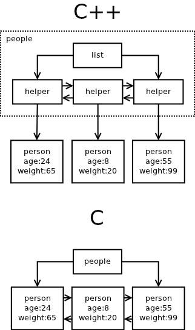
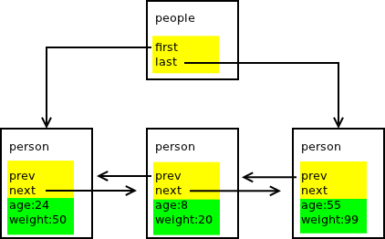

In my previous blog post I've discussed how the need for rigorous error handling in low-level infrastructure software prevents the usage of many fundamental C++ features (exceptions, constructors, destructors). The conclusion was that with such a severely limited feature set, writing the program in C yields shorter and more readable codebase. A side effect is eliminating the dependency on C++ runtime library, which shouldn't be easily dismissed, especially in embedded environments.
In this blog post I would like to explore the problem from a different point of view. Namely: Are there any performance implications in using C++ vs. C ?
In theory, the two languages should be equivalent. Object-orientedness is after all just a syntactic sugar on the top of procedural language, making the code more understandable to the human brain which seems to have evolved natural ability to deal with objects at the expense of dealing with entities such as flows, relations etc.
While the above is true — every C++ program can be automatically translated into an equivalent C program — the very ideology of the object-orientedness makes developers think in specific ways and design their algorithms and data structures accordingly. That in turn can have performance implications.
Let's compare how a C++ programmer would implement a list of objects:
EDIT: Assume that the object to be contained in the list is non-Assignable as is the case with any non-trivial objects, for example those holding large memory buffers, file descriptors, threads etc. If the object is Assignable simple std::list
class person
{
int age;
int weight;
};
std::list <person*> people;
C programmer would rather solve the same problem in the following way:
struct person
{
struct person *prev;
struct person *next;
int age;
int weight;
};
struct
{
struct person *first;
struct person *last;
} people;
Now, let's compare how this solutions look like in the memory:

First thing to note is that the C++ solution allocates twice the number of memory chunks compared to the C solution. For each element of the list there's a little helper object created. When there are lots of containers in the program the amount of these helper objects proliferates.
For example, in ZeroMQ creating and connecting a socket results in dozens of memory allocations. In the C rewrite of the library I am working on at the moment, creating a socket requires one memory allocation and connecting it results in yet one more allocation.
Obviously, the number of allocations has performance consequences. The time spent allocating the memory chunks may be irrelevant — in ZeroMQ it is out of critical path anyway — however, the amount of memory used and the memory fragmentation that ensues is pretty important. It has direct impact on how CPU caches are filled and, consequently, on cache miss rate. Recalling that access to physical memory is by far the slowest operation in modern computers may give you an idea what the performance impact would be.
That's not where it ends though.
The solution chosen has direct impact on the complexity of the algorithms. In C++ solution erasing an object from the list has O(n) complexity:
void erase_person (person *ptr)
{
for (std::list <person*>::iterator it = people.begin ();
it != people.end (); ++it)
if (*it == ptr)
people.erase (it);
}
In the C solution, erasure of the object can be done in constant time (simplified version):
void erase_person (struct person *ptr)
{
ptr->next->prev = ptr->prev;
ptr->prev->next = ptr->next;
ptr->next = NULL;
ptr->prev = NULL;
}
Is this lack of efficiency just an artefact of std::list<> implementation or is it inherent to the object-oriented paradigm as such?
Let's have a closer look at the problem.
The real reason why any C++ programmer won't design the list in the C way is that the design breaks the encapsulation principle: The implementer of the "person" class has to know that its instances will be eventually stored in "people" list. Moreover, if a 3rd party chooses to store it in a different list, the implementation of the person would have to be change. This is an anti-pattern that OO programmers learned to avoid.
However, if we can't place the "prev" and "next" fields into "person" class, we have to put them elsewhere. Thus, there's no other option but to allocate a helper object, the way std::list<> does.
Moreover, while helper object contains pointer to the "person" object, "person" object cannot contain pointer to the helper object. If it did, it would break the encapsulation — "person" would have to be aware of the container(s) it resides in. Consequently, we can convert pointer to the helper object ("iterator") to the pointer to "person", but not vice versa. That's the underlying reason why erasing an element from std::list<> requires full scan of the list, in other words, why it is O(n)-complex.
In short, if we follow the object-oriented paradigm we can't implement a list with all operations being O(1)-complex. To do that we have to break the encapsulation principle.
EDIT: A lot of people point out that iterator should be used instead of pointer. However, imagine the object is contained in 10 different lists. You would have to pass structure containing 10 iterators around instead of the pointer. Morever, it doesn't solve the encapsulation problem, just moves it elsewhere. Instead of modifying "person" object every time you would want to add it to a new type of container you would have to modify the iterator tuple structure.
That could be the conclusion of this blog post. However, the topic is interesting enough to ask one more question: Is the deficiency we are seeing inherent to object-oriented design as such or is it specific to C++ language? Can we imagine an object-oriented language that would allow for list with all associated operations being O(1) complex?
To answer the question we have to understand the underlying problem. And the problem turns out to be the very definition of term "object". In C++ "class" is just a synonym for C "struct". Both keywords can be used almost interchangeably. The implication is that "object" is a collection of data located in a continuous chunk of memory.
That is an automatic assumption that C++ programmers don't even start to question. However, let's try to examine the "object" from a different point of view.
Let's say that object is a collection of logically related data that has to be guarded by the same critical section to ensure its consistency in multi-threaded program. This definition radically changes our understanding of the architecture. The picture below shows the C person/people program (as listed above) and marks the data fields that should be guarded by a list-level critical section (yellow) vs. data fields to be guarded by element-level critical section (green):

For a person with object-oriented world view it's a pretty exotic picture. The "people" object is composed not only of the fields in "people" struct itself, but contains also some of the fields ("prev" and "next") in the "person" struct.
However unexpected, the decomposition makes perfect technical sense:
Finally, let's do a thought experiment and extend C++ to allow this kind of architecture. Note that goal here is not to offer a perfectly designed language extension, rather to show that the thing is at all possible.
That being said, let me introduce "private in X" construct. It can be used within class definition. The data members following "private in X" would physically become part of structure X, however, they would be accessible only from the class being defined:
class person
{
public:
int age;
int wieght;
};
class people
{
private:
person *first;
person *last;
private in person:
person *prev;
person *next;
};
In conclusion, if ZeroMQ was written in C it would require less memory allocations, there would be less memory fragmentation and some of the algorithms would have O(1) complexity instead of O(n) or O(log n).
The problem behind the inefficiency is not in ZeroMQ code, nor is it an inherent flaw of object-oriented methodology. Rather it is a deficiency in the design of C++ language. And to be fair to C++, the same problem exists in most — if not all — object-oriented languages.
EDIT: Patrick Wyatt have written a more extensive blog post on intrusive lists. You can find it here.
Aug 30th, 2012